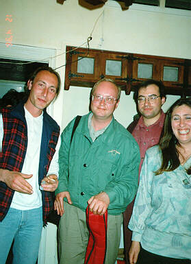
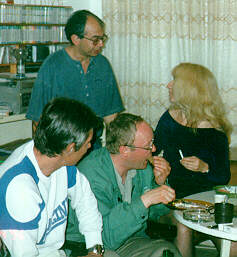
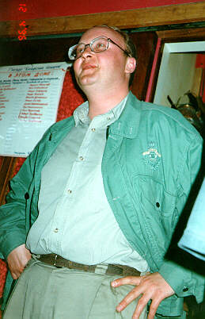

| М.Щербаков в Хайфском клубе самодеятельной песни. Февраль
1996. Прислал Эли Бар-Яхалом. |
|---|
 Герман Коган (хайфский исполнитель), М.Щербаков с гитарой Д.Кимельфельда, Эли Бар-Яхалом, Ася Островская (художница) |
 "Затем проглатываю..." На заднем плане - Михаил Бяльский |
 Крупнейший бард современности. |